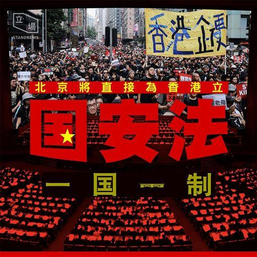

之前的两篇原创博文，职业五毛大量刷屏，说明俺又戳到朝廷的痛点了 :) 而且读者对之前那两篇的评价挺高的，俺不胜荣幸 :)
开博十多年，俺多次说过——每当职业五毛来捣乱，对鄙人都是一大鼓励！
前几天（5月21日），朝廷方面公布了“对香港量身定做的《国安法》”，国际舆论哗然。今天发一篇《每周转载》，分享若干外媒报道。

（编程随想注：以下是此文部分内容摘录）
（编程随想注：以下是全文摘录）
（编程随想注：以下是此文部分内容摘录）
上述这篇文章提到了：
经常看本博客的读者都知道，俺经常称习近平为“习二逼 or 习呆呆”。为啥捏？在博文《从量变到质变——中美关系40年》中，俺提到了如下这段：
（编程随想注：以下是全文摘录）
（编程随想注：以下是全文摘录）
（编程随想注：以下是全文摘录）
（编程随想注：以下是全文摘录）
（编程随想注：以下是全文摘录）
很明显，香港已经逐步从“半沦陷状态”蜕变为“沦陷状态”。未来，朝廷的【维稳系统】会更加肆无忌惮地把魔爪伸到香港。
有鉴于此，身处香港的政治抗议人士需要强化【网上斗争】的技巧（尤其是【隐匿身份】的网络技术）。作为身处【内地】的屁民，俺长期抹黑党国，长期恶毒攻击党和国家领导人。对【网上斗争】的技巧，俺还是有资格吹嘘一下滴。
最近10多年，俺已经写了很多【信息安全】的傻瓜化教程。如果你没有耐心一篇篇去看，至少先【看完】如下这篇：
《为啥朝廷总抓不到俺——十年反党活动的安全经验汇总》
（上述这篇【汇总】，可以视作俺所写的信息安全教程的【总纲】）
在本文的结尾，再次贴出俺多次引用过的打油诗，与各位反党反共人士共勉。
俺博客上，和本文相关的帖子（需翻墙）：
《如何理解“英美法系”（普通法系）——从“英国古代史”聊到“香港国安法”》
《变相的“全民公投”，垂死的“一国两制”——2019香港区议会选举随想》
《每周转载：香港“反送中”政治抗议活动大事记（10月至11月）》
《每周转载：香港“反送中”政治抗议活动大事记（8月初至9月初）》
《每周转载：香港“反送中”政治抗议活动大事记（7月初至8月初）》
《每周转载：香港“反送中”抗议活动的外媒报道（6月9日至6月15日）》
《每周转载：香港“反送中”抗议活动的外媒报道和网友评论（6月16日至6月22日）》
《每周转载：关于香港和澳门的特首选举（外媒报道和网友评论）》
《每周转载：关于“一国两制白皮书”和“国台办言论”（大量网友评论和图片）》
《每周转载：关于香港抗议洗脑教育（网文3篇，图片多张）》
《从量变到质变——中美关系40年》
《“盛大庆典”难掩【内忧外患】——天朝沦陷70周年随想》
《政治常识扫盲：理清“国家、政体、公民、政府、政党”等概》
《台湾民主运动与独立运动简史》
《回顾“六四”》（系列）
《谈革命》（系列）
开博十多年，俺多次说过——每当职业五毛来捣乱，对鄙人都是一大鼓励！
前几天（5月21日），朝廷方面公布了“对香港量身定做的《国安法》”，国际舆论哗然。今天发一篇《每周转载》，分享若干外媒报道。
★《香港＜国安法＞——你想知道的六个问题 @ BBC/英国广播公司》
（编程随想注：以下是此文部分内容摘录）
港版《国安法》与《基本法》23条有什么关系？
2003年，香港时任特首董建华政府推动23条立法时遭到社会强烈反对，触发当年7月1日香港主权移交纪念日有50万人参与大游行，示威者担心23条会限制港人言论、集会自由，港府原本在游行后，计划坚持把草案提交立法会恢复二读，但香港行政会议成员田北俊宣布辞职，港府撤回方案。
（编程随想注：“《基本法》23条”引发的相关争议，参见维基百科的“这个链接”）
自此，23条成为了“政治毒药”，直至近期反对《逃犯条例》修订引发的“反送中”示威中，反对23条的标语偶尔亦会出现在示威者的文宣当中，而北京一直对23条久久未能通过“耿耿于怀”，近日不断有消息传出，北京希望香港尽快通过基本法23条立法。
香港特首林郑月娥多次表示，23条是香港宪制责任，但需要在正确时机与良好气氛下才能推行。
中国人大常委会副秘书长王晨周五（5月22日）表示，23条自2003年受挫以来，法例在香港被人“污名和妖魔化”，“有被长期搁置的风险”，而现在“一国两制”在香港遇到新风险和新挑战，特别是去年修例风波，有“反中乱港势力主张独立”、自治、公投、歧视和排挤中国大陆在港人员，污损国旗国徽，暴力对抗警方执法，瘫痪政府立法会，这些行为“严重挑战一国两制原则”，而香港在国家安全方面的制度和执行机制存在“不健全、不适应、不符合的短板问题”，因此要采取有力措施防范制止和惩治。
去年区议会选举，香港民主派取得压倒性胜利。在今年稍后举行的立法会选举，民主派称将努力推动“35+”计划，希望可以取得立法会70个议席中的过半议席。有分析认为，北京大力推动《国安法》之时，已经不再优先考虑建制派选情会否遭受打击，显示了北京对香港在国家安全问题上的决心。
......
什么是《基本法》附件三？
此次草案列明，香港的《国安法》将直接列入放在《基本法》附件三，由香港公布实施。亲北京阵营认为这本来是属于中央政府本身有的权力，但这个过程被香港民主派形容是抢夺香港的立法权。
根据香港《基本法》第18条，凡在附件三的法律，由香港“在当地公布或立法实施”；人大常委会在征询其所属的“香港基本法委员会”、香港特区政府的意见后，可对《基本法》附件三的法律作出增减，任何列入附件三的法律，限于有关国防、外交和其他按《基本法》规定不属于香港特区自治范围的法律。
目前《基本法》附件三列出的“全国性法律”，包括中国国籍法、中国领海声明、中国外交特权、中国国庆日决议、中国国徽命令等等。这些法律为中国全国均生效的法律。今次人大推出的是为香港特设的港版《国安法》。
香港大学法律学者张达明认为，《基本法》附件三的“全国性法律”，本身应该是指该条例在全国地区实施，然后包括香港，但今次人大的做法，是制定一条“只适用于香港的全国性法律”，这违反了附件三的原意。
《国安法》与“反送中”有关吗？
去年6月，香港“反送中”争议源自一个可以把在港嫌疑犯押返中国大陆境内受审的《逃犯条例》修订案，如今香港民主派认为，《国安法》比起《逃犯条例》修订案更严苛，中方提出可以在港设立国家安全机构，引发外界关注《国安法》会否涉及“跨境执法”或把港人押返大陆受审等问题。
“反送中”示威因为港府迟迟不肯撤回《逃犯条例》修订案，从相对和平的游行，逐步演变成连场暴力冲突，示威者提出“五大诉求”，包括撤回《逃犯条例》修订、落实普选、成立独立调查委员会、释放被捕人士和撤回“暴动”定义等。众多诉求中，港府只撤回《逃犯条例》修订，并强调不会屈服于示威者的暴力威胁，未有回应其他诉求。
中国大陆近年来加速扩大在香港政治和经济方面的影响力，被外界视为削减“一国两制”、“港人治港”和原有生活方式，加剧了“反中”情绪。“反送中”示威者多次针对中国国旗及国徽，亦有人举起港英时代或“香港独立”的旗帜，在疫情期间“反中”情绪升温，有商店明言拒绝大陆客人。
尽管众多分析指出，“香港独立”或“恐怖主义”目前并非示威者主流的意识形态，但示威转趋暴力化、针对中国象征加上香港示威者表明会争取英美等国家的支持，成为了北京方面推动香港《国安法》的借口。
谁会受到影响呢？
示威人士、媒体、法律界、民主派政治团体、非政府组织、与外国政客有联系的政客等等，全部都有可能受到《国安法》的影响。
......
香港学运领袖、民主派团体“香港众志”秘书长黄之锋表示，“港版国安法”是“为国际战线手足度身订造”。
在香港示威中，“国际战线”指一群主力向外国政府进行游说工作的人，当中包括黄之锋，他们在示威期间到美国游说，呼吁美方通过《香港人权民主法案》。
黄之锋强调自己没有后悔推动美国政府通过实施《香港人权民主法案》，会继续延续“国际战线”，但不排除自己的组织会被取缔。
他说无谓强作乐观，“香港会变成怎么样？又有多少人会被控告？会取缔多少组织？会不会被‘送中’（送回中国）？被捕或入狱，自己都尚算有过几次经验；但后者会疯狂到什么程度，甚至几个月后自己会在哪里，其实未必向身边的人交待得到。”
过往有多起例子，中国的维权人士、律师和记者，会因为对政府的批评而被指犯下国家安全的罪名，香港担心新《国安法》也会影响香港的活动人士。
以纪念“六四”和推动中国民主发展的“支联会”主席李卓人担心《国安法》会以言入罪，担心“支联会”日后支持中国维权活动或人士，会变相“颠覆国家政权”。香港“社民连”立法会前议员梁国雄则以自己所穿的“结束一党专政”衣服为例，称只要群众同时穿着这件衣服，在大陆已经干犯颠覆国家安全罪。他又以《零八宪章》起草人刘晓波为例，称他就是在《国安法》下被判监多年。
港大法律学者张达明认为，这对香港法治有很大影响，他担心《国安法》会变相让大陆可以跨境执法，而就算香港法院认为《国安法》与人权等有抵触，现实上北京也可能透过“释法”等方式，推翻香港法院裁决，可以完全超越香港法院。
会否有示威活动？
香港民主党多名成员5月22日中午时从西区警署出发前往中联办，他们高举写有“香港人反抗”、“国安恶法摧毁香港”等字眼的横幅，沿路高呼口号，批评《国安法》是毁灭“一国两制”，变相令23条先斩后奏。他们一度被警方警告违反疫情期间所订立的“限聚令”。
由于肺炎疫情关系，港府实施禁令禁止8人或以上人员聚集，直至6月4日，不排除会因为疫情发展而进一步延长限制聚集的命令。预料短期内，香港警方也不会批准任何集会活动，包括每年均在香港举行的“六四晚会”。
过去数周，在香港市内各处曾出现零星约几十人至几百人的抗议活动，但要再次发起从维多利亚公园出发，聚集几十万人的示威活动，则并不容易。
当年因为反对23条立法而成立的“民间人权阵线”（民阵）表示，“一定奋战到底”，但承认现在发起任何行动都非常困难。“民阵”原本计划7月1日再度发起游行，但暂时未获批准。
会影响香港经济吗？
香港股市周五因为《国安法》消息受压，恒生指数急跌，显示市场有恐慌情绪。香港股市5月22日下跌1349点，即5.5%，是2008年以來点数跌幅最多的记录。
香港一些股评员认为，《国安法》可能会吓退外资，长远会造成人才流失。谷歌搜寻器香港地区在《国安法》消息传出后，搜寻“移民”的人数急增4倍。
香港“民阵”召集人岑子杰表示，审议《国安法》的消息出台后，香港股市“低开、不停跌”，称中共才是推动“揽炒（玉石俱焚）香港”的一方，批评此举不但摧毁自由民主，亦是破坏香港经济繁荣基础的“最大核弹”。
中国政协副主席、前香港特首梁振英表示，香港大部分人都愿意为国家安全有所承担，相信立法不会影响外资，又指国家已全面、充分地考虑立法后引起的后果。他批评勾结外部势力、动乱才是真正冲击外资对香港信心的负面因素。（编程随想注：这个梁振英，被网民戏称为“梁书记”）
美国克莱姆森大学（Clemson University）经济系副教授徐家健对BBC中文表示，这次股市跌幅不算大，亦是预期之内，而坊间讨论的撤资、人才流失，是在“反送中”运动背景下已经正在发生，而许多外资如果想在香港投资，亦早有心理准备，在香港做生意是要跟大陆的规则。
他认为这次《国安法》反而为香港减少了不明朗因素，“决定走的人会离开，不走的人会在一个很清楚的框架下生存”。他更关注是中美交恶的情况下，美国会如何反应，“如果美国觉得香港只是中国一部分，不再利用香港做缓冲角色，这对香港的打击会更大”。
美国早前通过的《香港人权民主法案》提到，每年会审视香港独立关税区的地位，早有分析指出，此举可能会进一步打击香港经济。美国总统特朗普明言，如果香港实施《国安法》，将有强烈回应。
......
★《北京公开＜国安法＞细节，专家忧香港自治“被判死刑” @ 德国之声》
（编程随想注：以下是全文摘录）
在北京出人意料地于周四晚公布了拟议港版《国安法》的计划后，中国全国人大常务委员会副委员长王晨周五上午公布了更多细节。在一份名为“关于《全国人民代表大会关于建立健全香港特别行政区维护国家安全的法律制度和执行机制的决定（草案）》的说明”中，王晨表示，“一国两制”在实践过程中面临着新的风险和挑战，当前“一个突出问题就是香港特别行政区国家安全风险日益凸显，特别是2019年香港发生‘修例风波’以来。……这些行为和活动，严重挑战‘一国两制’原则底线，严重损害法治，严重危害国家主权、安全、发展利益，必须采取有力措施依法予以防范、制止和惩治”。
说明还称，考虑到香港现状，必须“从国家层面建立健全香港特别行政区维护国家安全的法律制度和执行机制，改变国家安全领域长期‘不设防’的状况”。在该法案经过中国人大立法程序后，直接在香港实施，将允许中国政府在香港设置国家安全机构。同时，香港也将建立“维护国家安全的机构和执行机制”,并明确规定香港特首应当“就履行维护国家安全职责、开展国家安全推广教育、依法禁止危害国家安全的行为等情况，定期向中央人民政府提交报告”。
此外，说明还指出， “香港特别行政区根据香港基本法第23条规定仍然负有维护国家安全的宪制责任和立法义务，应当尽早完成维护国家安全的有关立法”，“香港特别行政区行政机关、立法机关、司法机关应当依据有关法律规定有效防范、制止和惩治危害国家安全的行为” 。
损害香港自治权
香港泛民派立法会议员杨岳桥表示，这一连串的动作显示出北京已不在乎《中英联合声明》中赋予香港的高度自治权。
杨岳桥在接受德国之声采访时说：“在香港设立一个直接向北京负责的安全机构，这是前所未有的，谁会领导这个机构还有待观察。但如果这是北京计划应对去年崛起的反送中运动的方式，我不认为这能解决问题。它反而会制造出更多与‘一国两制’框架运作有关的问题。”
杨岳桥指出，若全国人大想针对香港出台全国性法律，应该遵循《基本法》第18条，该条规定了全国人民代表大会常务委员会如何在《基本法》附件三中添加全国性法律。这是中国政府计划实施拟议中的《国安法》的方式。
“现在的问题是全国人大希望插入一条只在香港施行的法律，这违反了《基本法》第18条的定义。他们选择绕过香港立法会。这公然违反了‘一国两制’的框架，同时也削弱了《基本法》所承诺的高度自治。”
“对香港判死刑”
由于尚不清楚法案草案中提到的四种刑事犯罪的定义，一些专家认为该法可能严重阻挠香港司法系统运作。香港中文大学政治与行政学系副教授马岳表示，此举将开启先例，允许中国政府通过全国人大制订任何法律并强行在香港实施。
此外，马岳也认为，该草案可能对香港人享有的其它公民自由构成庞大威胁，其中包括言论自由及集会自由。他对德国之声表示：“在2019年的反政府示威中，许多人被指控骚乱或纵火。”
“如果依照中国的标准制订国安法，判决可能会更严厉。这将严重摧毁公众对香港司法系统的信心。”
纽约大学美国-亚洲法律研究所特别研究员张语轩在接受德国之声采访时指出，现在拟推的《国安法》将使北京能进一步介入有关香港的重要决定。
张语轩表示：“一段时间来在香港不断上演的真实情况是，所有有关香港的重大决定都是由北京做出的。（拟定《国安法》的做法）无异于是对香港判处死刑。”
反政府示威再升级？
虽然多数专家一致同意，制订《国安法》将进一步加剧香港的反中情绪，但一些人认为，新一波的抗议潮应该不会达到2019年历时数月的反送中运动规模。
香港中文大学的马岳表示，《国安法》将引起香港人的许多不满，但他不认为香港会再次出现类似于去年的大规模抗议。
“我觉得人民比去年更愤怒，但是去年的经验显示，香港警方在镇压示威者时毫不留情。所以在香港警方和政府得到北京更强烈的支持后，人民不太可能再次上街与警察对抗。”
泛民派议员杨岳桥表示，如果北京绕过香港所有重要机构通过了《国安法》，将会严重破坏香港《基本法》的基础。
“若这条法律最终成真，‘一国两制’框架将不剩下什么。无论我们如何给这条法律命名，区别香港与中国的自由基础将受到挑战、破坏，最终消失。”
★《港国安法或触发大抓捕，北京将在港设国安机构 @ RFA/自由亚洲电台》
（编程随想注：以下是此文部分内容摘录）
中国政府绕过香港特区立法会，对香港实施国家安全法的提案，已经纳入全国人大会议议程，预计将于下周通过表决。文件披露，中央会根据需要在香港特区设立“相关机构”。有消息说，相关机构的功能是监察特区政府执行相关法律情况。学者认为北京强行推行这项法律，是将香港带入“一国一制”，并预计未来香港会有大抓捕行动，其严重性可能不逊于1989年。编程随想注：
中国全国人大会议议程包括审议“港版国安法”。这条新法下周由全国人大提案并通过后，会随即放入《基本法》附件中。草案还允许中央在香港可以成立维护国家安全的相关机关，并规定行政长官定期向中央提交国安报告。
国安法实施，一国两制荡然无存
毕业于华东政法大学的学者黄平对本台表示，北京很早就想对香港采取更加严厉的管制措施，今年终于找到了机会。但这一动作令“一国两制”完全废掉：“原计划是希望通过送中条例、23条，现在他干脆直接由全国人大来推出国安法，实际上使得一国两制荡然无存。这完全是一国一制了。他也不在意香港人的感受，也不在意台湾人的感受。”
至于当局为什么不顾香港绝大多数市民的反对，执意要推行香港国安法。黄平说，除了去年发生的反送中运动，最关键的还是中国主政者与他的前任完全不同：“ 最关键的还是主导的这个人他本身所决定的。现在他现的内心‘红’得狠，左得狠，而且要回到毛泽东的原教旨主义。对内全面开打，一是对民间，一是对体制内。对香港、对台湾都采取这种狠的办法。对外关系上，至少口号回到了毛泽东时代，全面树敌。”
......
上述这篇文章提到了：
中国主政者与他的前任完全不同。
经常看本博客的读者都知道，俺经常称习近平为“习二逼 or 习呆呆”。为啥捏？在博文《从量变到质变——中美关系40年》中，俺提到了如下这段：
习呆呆这个人其实和薄熙来有很多相似之处。他俩年轻的时候正赶上毛腊肉发动文革，在成长期经历了那个疯狂的年代，必定会对他们的心理有深刻的影响。比如说当时的一句口号叫【红旗插遍全球】——这就非常煽情。天天被这类口号洗脑，人往往变得【非理性的自信】。而习呆呆掌权之后，身边从来都不缺溜须拍马的佞臣。这又会继续加重他那【非理性的自信】。在这种情况下，包子已经把邓矬子【韬光养晦】的遗训抛到脑后。所以当习包子掌权之后，外交上高调地向周边国家叫板（其实也就是在对美国叫板），俺一点都不奇怪。有一句老话叫做【性格决定命运】，推而广之，独裁者的性格往往决定国家的命运。
★《欧盟要求中国尊重香港自治，英澳加指国安法破坏一国两制 @ RFI/法广》
（编程随想注：以下是全文摘录）
在北京将推出香港版的“国安法”之后，欧洲联盟27国星期五发表声明，要求中国遵守香港高度自治的地位。
英国、澳大利亚、加拿大三国外交部长发表联合声明指出：北京在香港强行推出一个这样的法律，没有香港人民以及香港立法机构的直接参与，很明显形同破坏了保障香港高度自治法律地位的的“一国两制”。
欧盟外交最高负责人何塞·博雷利代表27个成员国表示，欧洲联盟对维护香港高度自治地位非常重视，这完全符合香港基本法以及国际承诺。他补充说， 欧盟希望香港在一国两制的原则下，持续地保持稳定和繁荣。
英国澳大利亚加拿大三国提醒北京，为香港基本法奠定法律框架的英中联合声明预告，自由权利，包括个人自由和新闻自由，集会和结社自由，以及其他相关的权利都应包涵进香港的法律中。
加拿大总理特鲁多在新闻发布会上表示，我们长期以来一直呼吁北京当局与香港人民进行真正对话，降低紧张情势。特鲁多表示，加拿大将继续关注香港局势。
欧盟表示，将严密注视香港情势演变，欧盟认为，最好的办法是经过民主辩论，征询各党派意见，遵守香港基本法保护的言论自由的框架下，就香港安全问题立法。一方面这是基本法第23条预计的，同时也保护了香港的一国两制赋予的高度自治。
★《民主派：港版国安法等同香港已经完蛋 @ RFI/法广》
（编程随想注：以下是全文摘录）
经过人大宣告将会绕过香港立法会订立“港版国安法”后，民主派多名议员21日晚上召开记者会，形容“一国一制正正式式在香港落实”。民主派会议召集人陈淑庄直斥，北京此举是向国际展示，一国两制、高度自治已被破坏如无物，她寄语港人要坚强：“我们不能够这样子就被打残！”而公民党的郭荣铿议员则告诉纽约时报：“香港已经完蛋。”
广告
陈淑庄指出，基本法列明由香港自行立法、本来就已极具争议的23条，如今竟然在绕过立法会下，由北京为香港度身订造“港版国安法”，犹如“圣旨加诸香港人头上”，亦反映北京完全没有吸取2003年和去年反送中的教训，做法非常不智，并象征“一国一制正正式式在香港落实”，同时向国际社会显示中共根本是视人权、自由为眼中钉，要逐样除掉。
陈续指，今年还会否有立法会选举是未知数，但她寄语港人也要在不民主的选举制度下，充份显示港人会如何投下手中一票，捍衞香港的核心价值和民主自由。
民主党主席胡志伟形容，北京今次做法“代表中共决定‘揽炒’香港，所以不必要再屈香港抗争者揽炒，它（中共）打开了揽炒的序幕”。胡提到，今次“港版国安法”的“最辣”之处在于完全由北京定义什么人要被逮捕，这无异是人治做法。
公民党党魁杨岳桥指，北京“用更恶的法弥补恶法的管治失败”，显然未有吸取反修例教训，他担忧今次以国防之名，借基本法附件三引入“港版国安法”如“打开虫洞”，日后不知会再有什么法例再被引入，而且会变得轻而易举。
法律界议员郭荣铿指出，“走到这一步，一国两制今日正式被取消”，并相信中共不会就此停步，“极权永远觉得自己唔够权力，觉得永远控制不够”，继续将所有恶法透过所谓附件三，完全违反基本法下直接颁布。他续说，香港亦将会失去作为国际城市的角色，相信香港政策法亦可能被取消。
有记者问特首林郑月娥在港管治是否已全无角色。陈淑庄笑言：“形容得非常之好”，并指在两办发声明后，基本法第22条如何被扭曲，中央权力不停无限僭建，看不到林郑仍有管治香港，只需“听话”，否则“特首都没得做，她其实可以消失”。
★《白宮官員：資金或撤走，香港將喪失金融中心地位 @ 香港01》
（编程随想注：以下是全文摘录）
北京推動「港版國安法」引起國際關注。美國高官警告北京的舉動或終止香港的特殊地位。白宮經濟顧問哈塞特（Kevin Hassett）5月22日估計，外圍投資者或不再視香港為現時的金融中心，可能出現撤資情況。
哈塞特接受美國有線新聞網絡（CNN）訪問時指，官員正在研究可行的反制措施，「我們絕對不會讓中國通行」，並揚言會考慮所有選項。他認為，推動「港版國安法」對中國和香港人的代價很大，因為外圍投資者或不再視香港為現時的金融中心。
哈塞特另外接受霍士商業新聞電視台時也提到，投資者不太可能會投資於一個嘲笑法治的地方。他預計香港將會有嚴重的資金外流問題，推行「港版國安法」之後，香港不再是亞洲的金融中心，代價非常沉重。
國家安全顧問奧布萊恩（Robert O'Brien）表示，香港身處不同關稅同盟的身份，以及因為被視為是自由體制所得的特別待遇，將因為北京的舉動面臨風險。他暗示，美國或和盟友協調可行的反制行動。他指，如果北京推行「港版國安法」並採取強硬行動，美國將會回應，「我認為世界其他國家將會回應，包括英國和我們盟友和朋友。」
國務卿蓬佩奧（Mike Pompeo）發表聲明表示，美方與香港人同行。他稱，強烈要求北京重新考慮其「災難級方案」，遵守國際義務，尊重香港高度自治、民主制度和公民自由，並指這是保持美國法律給予香港特殊地位的關鍵。
★《美若終止香港特殊地位，到底影響有多大？ @ 香港經濟日報》
（编程随想注：以下是全文摘录）
智庫戰略暨國際研究中心（CSIS）中國研究主任白明（Jude Blanchette）指出，《國安法》提案可能導致美國終止香港的特殊待遇、將香港與中國內地同等對待。若美國一旦終止香港的特殊待遇，香港的貿易將會首當其衝受打擊，嚴重影響香港作為國際金融及商業中心的根基。然而，掀起的地緣政治影響遠高於經濟後果。
美國承認香港的特殊地位，《美國－香港政策法》（英語：United States–Hong Kong Policy Act），鑑於在1997年7月1日，英國結束對香港的管治後，香港成為中國轄下的一個特別行政區，美國政府重新釐定對港政策。
（编程随想注：上述法案的介绍参见维基百科的“这个链接”）
美國國會推動並通過該法案，容許美國依據《中英聯合聲明》裏中國讓香港實行「高度自治」的承諾，在金融和文化等領域給予香港有別於中國的待遇，並且視香港為「獨立關稅區」，以及在一國兩制框架之下，支持香港的人權、民主與自治，保障香港的生活方式，及美資在這個國際金融中心和自由港的營商。
根據此法案，美國政府承認中英聯合聲明，並繼續視香港作一個在政治、法治、經濟、貿易政策方面與中國大陸完全不同的地區，並在對外政策上將香港特別行政區政府與中華人民共和國政府區別對待。香港特區護照獲美國承認，申請赴美簽證獲獨立看待。香港可在美國出口管制下購買敏感技術，但要確保無不當用途。
因此，若美國一旦取消香港特殊地位，不再視香港為一個「獨立關稅區」，美國徵收與中國同等的關稅及實施進出口限制，香港對中國的轉口價值將大大貶低。
其次，香港可在美國出口管制下購買敏感技術，例如超級電腦等，若美國將香港與中國大陸視為一體，香港要購買美國高科技產品同樣受限。據工商界人士指，就算不購買美國科技產品，轉而購德國、日本的產品，但不少產品內都含有美國科技在內，美國同樣可以根據最新的限制法案，如同對待華為一樣，令大部分科技產品不能輸入香港。
再者，最重要的是，因為香港是國際金融中心，若香港特殊地位一旦，美國可以限制某些企業來港或在港設總部，美國聯邦政府也會加緊調查各類來港資金，亦即是，如走到這一步，香港資金進出均可能受到美國一定管制，到時香港的評級也會被降低。
後續地緣政治影響 遠高於經濟後果
在目前的氣氛下，如果美國一旦動手，歐洲、加拿大及澳洲等也可能跟隨，香港將成為一個半封閉城市，駐港外資企業待遇與駐深圳、上海無異。香港現在既是中國企業主要的海外融資中心，擁有全球最大的離岸人民幣資金池，到時這些能否保得住？
上述只是經濟上的效應，白明認為，美國一旦取消香港特殊地位，掀起的地緣政治影響遠高於經濟後果。後續的影響到底有多大，現在真是難以估計。
★《北京为何一再错判香港？ @ RFI/法广》
（编程随想注：以下是全文摘录）
了解中共官媒内部运作的庞尔马（James Palmer），日前发表文章指出，在香港区议会选举产生结果之前，北京根据所收到的汇报，已经认定建制派必会在选举中胜出，而且是大胜，庞尔马指出，他所接触到的传媒均呈现一片乐观气氛，官媒党媒甚至在宣布结果前早已准备好祝捷的评论。
然而残酷的现实一度令中共传媒措手不及，根据《纽约时报》的报道，中共媒体在选举结果公布后，均采用了新华社所发的一篇简短消息，说选票已经统计完毕，并指责社会动荡“干扰了选举进程”。
（编程随想注：关于朝廷【严重误判】香港区议会选举，参见去年的博文《变相的“全民公投”，垂死的“一国两制”——2019香港区议会选举随想》）
庞尔马在出任目前的《外交政策》杂志编辑之前，从2009年至2016年曾经是《人民日报》旗下《环球时报》英语部门的编辑。他在《外交政策》网站发文指出，根据他从中共官媒一些人士所了解，中央对香港这次选举的结果事前居然胸有成竹，甚至已经准备好亲政府大胜的评论。目前是美国外交政策杂志《Foreign Policy》编辑的庞尔马说，这些官媒“似乎真诚地相信建制派将取得大捷”。他又说：“政治宣传是致人陶醉的药物，北京这次却是自我陶醉。”他透露他的消息来自英文的中国日报、中文的人民日报和环球时报的工作人员。
庞的文章指出，对香港情势出现如此离谱的错判，最主要的原因就是在香港为中共操控舆论的人，也是向中央汇报工作成功的人。他毫不讳言这个“人”就是中联办。不过，既然北京并不依赖单一管道的情报，为何仍会错判如斯？文章认为，在习近平政权日趋神经兮兮（paranoid）下，内部所有的报告都倾向于报喜不报忧，尤其事关领土分裂的敏感问题上。
《纽约时报》也报道了中共官方对香港选举的反应显有点手足无措。报道指出，在投票选举前的几天里，中国官方的新闻媒体一如之前将抗议者描绘成与外国势力勾结、旨在破坏中共统治、来自边缘组织而没有广泛公众支持的暴徒。《纽约时报》的报道指出，与民主阵营的支持者一样，官媒似乎也将周日的投票定位为对抗议活动的全民公投，是一个公众谴责暴力和民主运动的机会。
但当北京阵营的惨败情况逐渐明朗，纽时指出，大陆的新闻媒体没有对其进行报道，新华社发的一篇短消息只是简单地说，选票已经统计完毕，并指责社会动荡“干扰了选举进程”。官方的中国国际广播电台政治评论员许钦铎告诉纽时，不报道可能至少部分是一种保全面子的做法。他所在媒体的官网只刊发了新华社的简短报道。
中共对香港的错判，从2003年已经开始，并且是一错再错。当年董建华硬要上马为《基本法》23条立法但却招惹50万人上街抗议反对，北京对立法遇到如此规模的反对感到吃惊，并据说从那时开始采用多渠道的汇报方式，避免错估形势。但如果庞尔马所指“强人不听坏消息”的氛围继续下去，错判香港恐怕将一直继续下去。
★俺给香港【政治抗议人士】的网络安全建议
很明显，香港已经逐步从“半沦陷状态”蜕变为“沦陷状态”。未来，朝廷的【维稳系统】会更加肆无忌惮地把魔爪伸到香港。
有鉴于此，身处香港的政治抗议人士需要强化【网上斗争】的技巧（尤其是【隐匿身份】的网络技术）。作为身处【内地】的屁民，俺长期抹黑党国，长期恶毒攻击党和国家领导人。对【网上斗争】的技巧，俺还是有资格吹嘘一下滴。
最近10多年，俺已经写了很多【信息安全】的傻瓜化教程。如果你没有耐心一篇篇去看，至少先【看完】如下这篇：
《为啥朝廷总抓不到俺——十年反党活动的安全经验汇总》
（上述这篇【汇总】，可以视作俺所写的信息安全教程的【总纲】）
在本文的结尾，再次贴出俺多次引用过的打油诗，与各位反党反共人士共勉。
台湾民众要努力啊，否则就变成香港！
香港民众要努力啊，否则就变成大陆！
大陆民众要努力啊，否则就变成朝鲜！
朝鲜民众要努力啊，否则就变成地狱！
俺博客上，和本文相关的帖子（需翻墙）：
《如何理解“英美法系”（普通法系）——从“英国古代史”聊到“香港国安法”》
《变相的“全民公投”，垂死的“一国两制”——2019香港区议会选举随想》
《每周转载：香港“反送中”政治抗议活动大事记（10月至11月）》
《每周转载：香港“反送中”政治抗议活动大事记（8月初至9月初）》
《每周转载：香港“反送中”政治抗议活动大事记（7月初至8月初）》
《每周转载：香港“反送中”抗议活动的外媒报道（6月9日至6月15日）》
《每周转载：香港“反送中”抗议活动的外媒报道和网友评论（6月16日至6月22日）》
《每周转载：关于香港和澳门的特首选举（外媒报道和网友评论）》
《每周转载：关于“一国两制白皮书”和“国台办言论”（大量网友评论和图片）》
《每周转载：关于香港抗议洗脑教育（网文3篇，图片多张）》
《从量变到质变——中美关系40年》
《“盛大庆典”难掩【内忧外患】——天朝沦陷70周年随想》
《政治常识扫盲：理清“国家、政体、公民、政府、政党”等概》
《台湾民主运动与独立运动简史》
《回顾“六四”》（系列）
《谈革命》（系列）
版权声明
本博客所有的原创文章，作者皆保留版权。转载必须包含本声明，保持本文完整，并以超链接形式注明作者编程随想和本文原始地址：
https://program-think.blogspot.com/2020/05/weekly-share-144.html
本博客所有的原创文章，作者皆保留版权。转载必须包含本声明，保持本文完整，并以超链接形式注明作者编程随想和本文原始地址：
https://program-think.blogspot.com/2020/05/weekly-share-144.html